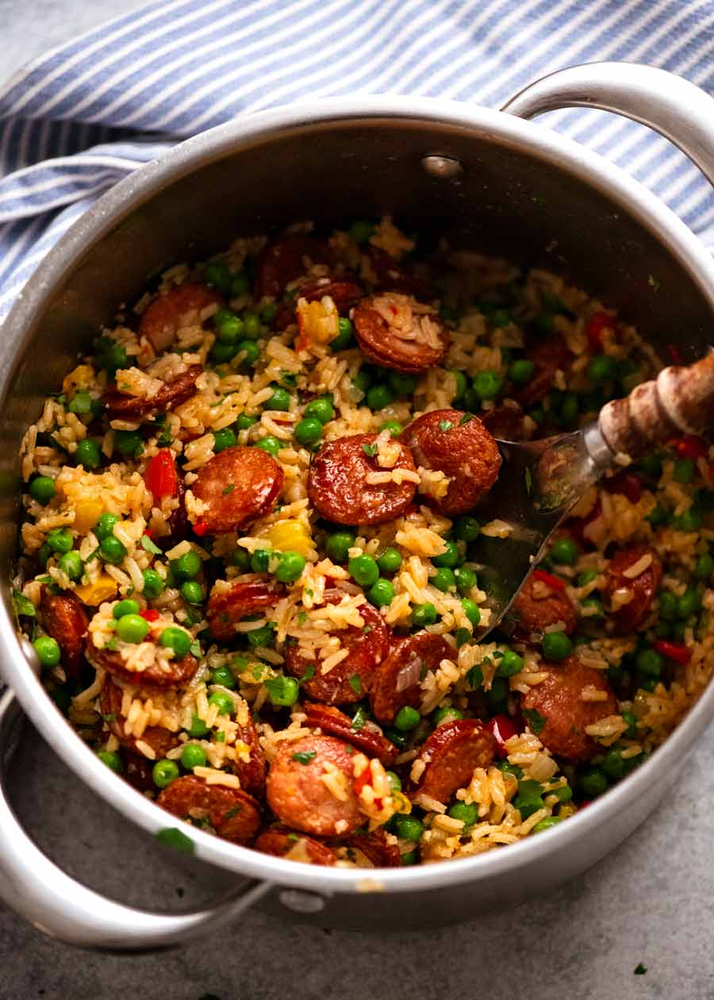

Sausage and Rice Casserole

Description
This Sausage and Rice Casserole is a quick one pot
dinner recipe that punches way above its weight in terms
of effort vs results. Smoked sausage is the trick! It
adds a ton of flavour that’s absorbed by the rice. I’ve
used kransky, but any type will do – kielbasa, chorizo,
etc.
Ingredients
- 3 tbsp extra virgin olive oil
- 5 garlic cloves
- 2 onions
- 1 yellow capsicum
- 1 red capsicum
- 400 g 14oz (~3) kransky or other smoked sausages
- 3/4 tsp salt
- 1/2 tsp pepper
- 3/4 tsp smoked paprika
- 1 1/2 cup long grain white rice
- 2 1/2 cups chicken stock/broth
- 2 cups frozen peas
Steps
- Cook sausage: Heat 2 tbsp oil in a large heavy based pot over medium high heat. Add sausages and cook until golden. Remove with a slotted spoon.
- Cook onion and garlic: Add remaining 1 tbsp oil. Add garlic and onion, cook for 2 minutes. Add capsicum and cook for 2 minutes until onion is translucent.
- Add rice and liquid: Add rice, chicken stock, paprika, salt, pepper and the sausage. Stir, bring to boil, then reduce heat to low so it's simmering very gently.
- Cover and cook: Cover with lid, cook 20 minutes.
- Add peas and rest: Remove pot from stove. Working quickly, remove lid, add peas, then quickly put the lid back on. Rest 10 minutes – the residual heat with cook the peas.
- Fluff and serve: Add parsley. Use a fork to fluff the rice. Serve immediately!